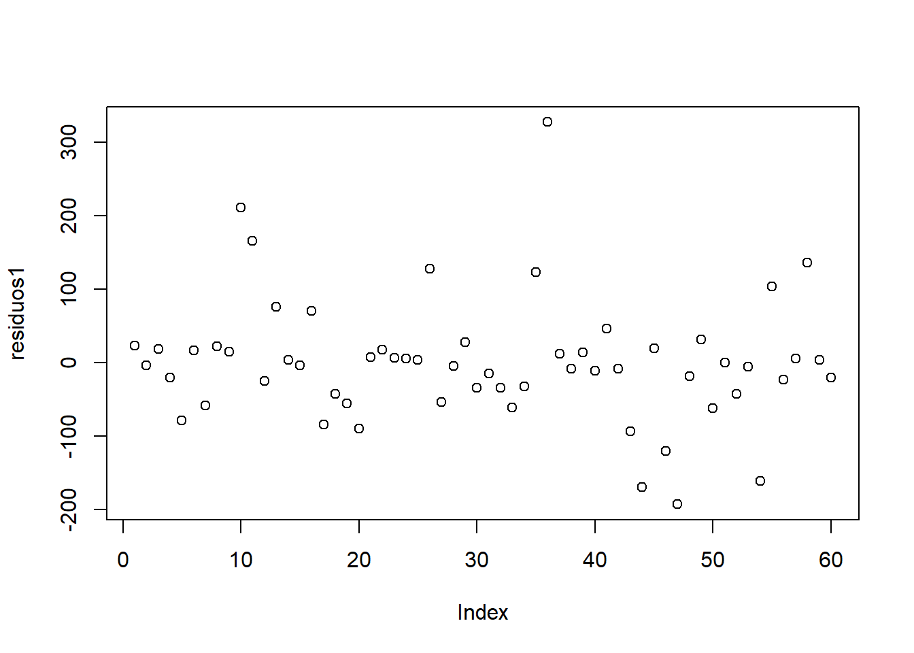
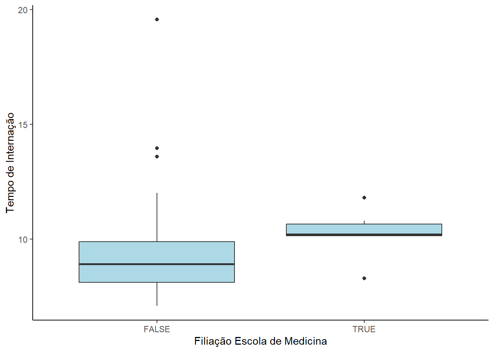
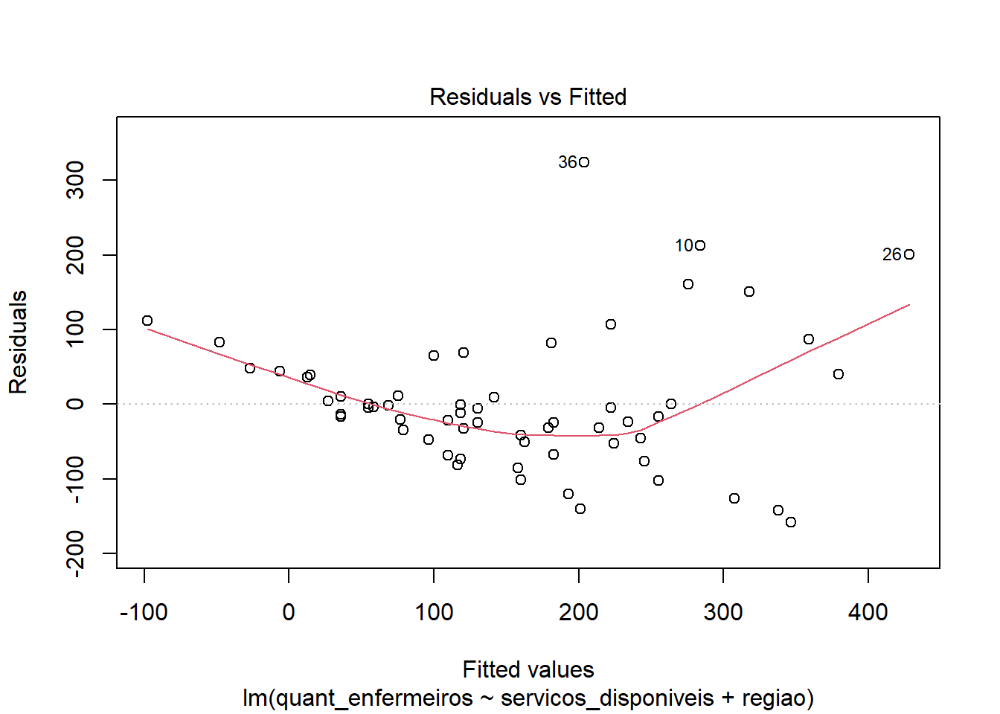
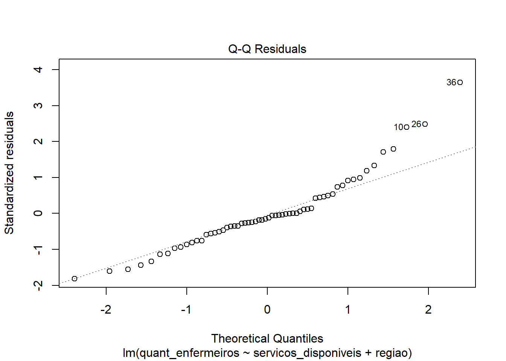
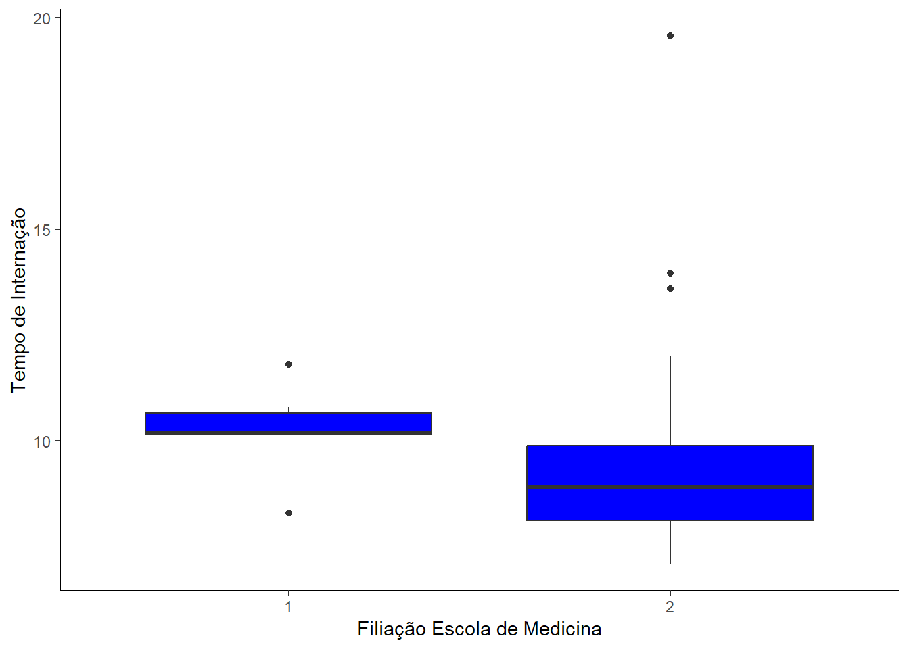
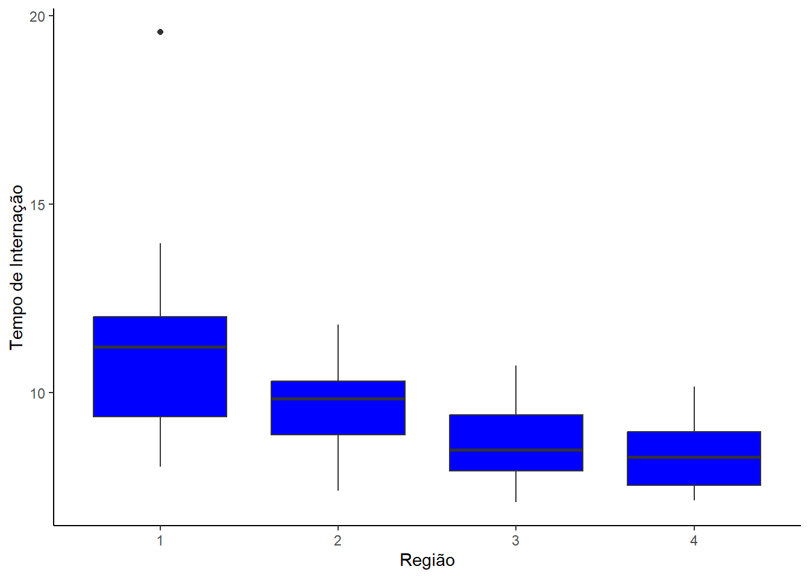
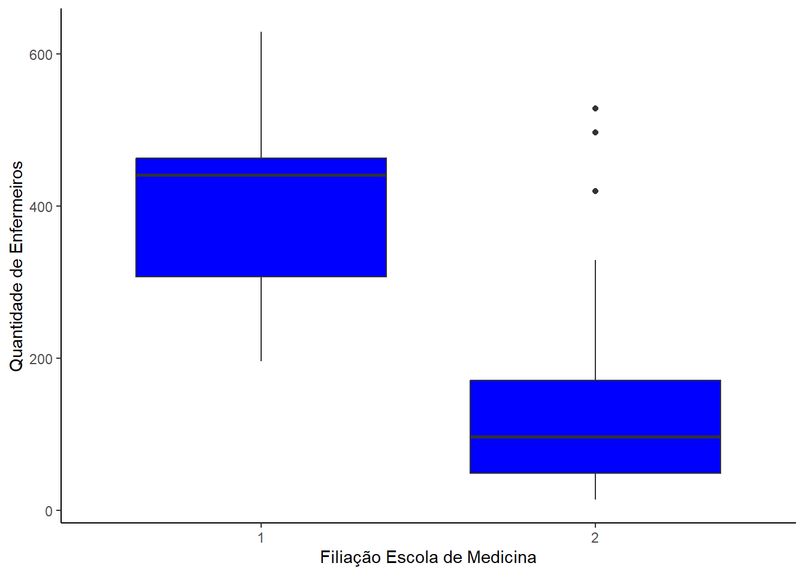
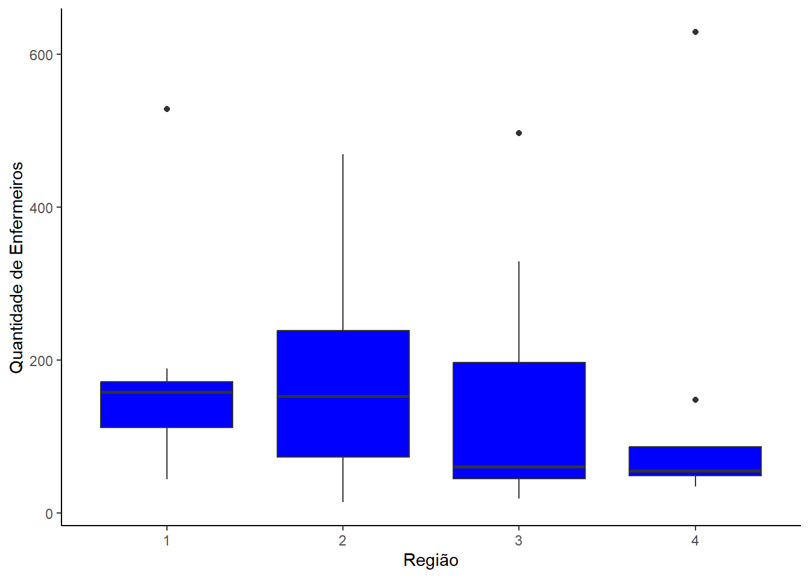

# Importação de dados e renomeação de variáveis
dados <- read_excel(#"C:/Users/User/Documents/GitHub/Trabalho-Regressao_UnB-2023-2/
"Dados/Dados_trabalho_20232.xlsx")[-1]
names(dados) <- c(
"tempo_internacao", "idade", "prob_infeccao", "prop_culturas_rotina",
"prop_raio_x_torax_rotina", "quant_leitos", "filiacao_escola_medicina", "regiao",
"media_pacientes", "quant_enfermeiros", "servicos_disponiveis"
)
# Tratamento de variáveis categóricas
dados_trat <- dados %>%
mutate(
filiacao_escola_medicina = as.factor(filiacao_escola_medicina),
regiao = as.factor(regiao),
servicos_disponiveis2 = servicos_disponiveis^2
)
# Separando o banco em dados de treino e de validação
set.seed(2023)
indexes <- 1:nrow(dados_trat)
index_treino <- sort(sample(indexes, 60))
index_valid <- indexes[!(indexes %in% index_treino)]
dados_treino <- dados_trat[index_treino, ]
dados_valid <- dados_trat[index_valid, ]Trabalho Final
REGRESSÃO LINEAR
Modelos
Hipotese 1
Espera-se que o número de enfermeira(o)s esteja relacionado às instalações e serviços disponíveis através de um modelo de segunda ordem. Suspeita-se também que varie segundo a região.
- Modelo 1: \(X_{10} = \beta_0 + \beta_{8} \cdot X_8 + \beta_{11} \cdot X_{11}^2\)
# Modelo 1 - todas, sem trasnformação
modelo1 <- lm(quant_enfermeiros ~ servicos_disponiveis2 + regiao, dados_treino)
summary(modelo1)
Call:
lm(formula = quant_enfermeiros ~ servicos_disponiveis2 + regiao,
data = dados_treino)
Residuals:
Min 1Q Median 3Q Max
-192.67 -36.33 -3.67 18.32 326.91
Coefficients:
Estimate Std. Error t value Pr(>|t|)
(Intercept) -9.753931 29.945418 -0.326 0.746
servicos_disponiveis2 0.089266 0.009049 9.865 9.06e-14 ***
regiao2 -10.463106 32.466465 -0.322 0.748
regiao3 5.105474 31.078105 0.164 0.870
regiao4 18.287864 38.256104 0.478 0.635
---
Signif. codes: 0 '***' 0.001 '**' 0.01 '*' 0.05 '.' 0.1 ' ' 1
Residual standard error: 87.4 on 55 degrees of freedom
Multiple R-squared: 0.6521, Adjusted R-squared: 0.6268
F-statistic: 25.77 on 4 and 55 DF, p-value: 4.648e-12residuos1 <- modelo1$residuals
plot(residuos1)
shapiro.test(residuos1) #nao atendido
Shapiro-Wilk normality test
data: residuos1
W = 0.90348, p-value = 0.0001765bptest(modelo1) #nao atendido
studentized Breusch-Pagan test
data: modelo1
BP = 11.53, df = 4, p-value = 0.02121- Modelo 2: \(ln(X_{10}) = \beta_0 + \beta_{8} \cdot X_8 + \beta_{11} \cdot X_{11}^2\)
# Modelo 2 - todas, log
modelo2 <- lm(log(quant_enfermeiros) ~ servicos_disponiveis2 + regiao, dados_treino)
summary(modelo2)
Call:
lm(formula = log(quant_enfermeiros) ~ servicos_disponiveis2 +
regiao, data = dados_treino)
Residuals:
Min 1Q Median 3Q Max
-0.92682 -0.37555 -0.02019 0.34932 1.11095
Coefficients:
Estimate Std. Error t value Pr(>|t|)
(Intercept) 3.794e+00 1.762e-01 21.531 < 2e-16 ***
servicos_disponiveis2 5.776e-04 5.325e-05 10.848 2.79e-15 ***
regiao2 -2.970e-01 1.910e-01 -1.555 0.126
regiao3 -2.255e-01 1.829e-01 -1.233 0.223
regiao4 -1.994e-01 2.251e-01 -0.886 0.380
---
Signif. codes: 0 '***' 0.001 '**' 0.01 '*' 0.05 '.' 0.1 ' ' 1
Residual standard error: 0.5143 on 55 degrees of freedom
Multiple R-squared: 0.7031, Adjusted R-squared: 0.6816
F-statistic: 32.57 on 4 and 55 DF, p-value: 6.359e-14residuos2 <- modelo2$residuals
plot(residuos2)
shapiro.test(residuos2) #atendido
Shapiro-Wilk normality test
data: residuos2
W = 0.98321, p-value = 0.5779bptest(modelo2) #atendido
studentized Breusch-Pagan test
data: modelo2
BP = 4.816, df = 4, p-value = 0.3067- Modelo 3: \(ln(X_{10}) = \beta_0 + \beta_{11} \cdot X_{11}^2\)
# Modelo 3 - servicos, log
modelo3 <- lm(log(quant_enfermeiros) ~ servicos_disponiveis2, dados_treino)
summary(modelo3)
Call:
lm(formula = log(quant_enfermeiros) ~ servicos_disponiveis2,
data = dados_treino)
Residuals:
Min 1Q Median 3Q Max
-0.98917 -0.40374 0.03954 0.27527 1.30645
Coefficients:
Estimate Std. Error t value Pr(>|t|)
(Intercept) 3.610e+00 1.141e-01 31.64 < 2e-16 ***
servicos_disponiveis2 5.728e-04 5.052e-05 11.34 2.41e-16 ***
---
Signif. codes: 0 '***' 0.001 '**' 0.01 '*' 0.05 '.' 0.1 ' ' 1
Residual standard error: 0.5125 on 58 degrees of freedom
Multiple R-squared: 0.6891, Adjusted R-squared: 0.6837
F-statistic: 128.5 on 1 and 58 DF, p-value: 2.412e-16residuos3 <- modelo3$residuals
plot(residuos3)
shapiro.test(residuos3) #atendido
Shapiro-Wilk normality test
data: residuos3
W = 0.98595, p-value = 0.7196bptest(modelo3) #atendido
studentized Breusch-Pagan test
data: modelo3
BP = 0.18632, df = 1, p-value = 0.666# Medidas de ajuste do primeiro modelo
rse3 <- sigma(modelo3)
rmse3 <- sqrt(mean(modelo3$residuals^2))
rsquared3 <- summary(modelo3)$r.squared
adjusted_rsquared3 <- summary(modelo3)$adj.r.squared
f_statistic3 <- summary(modelo3)$fstatistic[1]
aic3 <- AIC(modelo3)
bic3 <- BIC(modelo3)
medidas<-data.frame(rse3,rmse3,rsquared3,adjusted_rsquared3,f_statistic3,aic3,bic3)
names(medidas) <- c('RSE','RMSE','R2','R2ad','F','AIC','BIC')
kable(medidas)| RSE | RMSE | R2 | R2ad | F | AIC | BIC | |
|---|---|---|---|---|---|---|---|
| value | 0.5125289 | 0.5039144 | 0.6890889 | 0.6837284 | 128.5485 | 94.03076 | 100.3138 |
Hipotese 2
modelo12 <- lm(log(tempo_internacao) ~ ., data = dados_treino)
VIF(modelo12) GVIF Df GVIF^(1/(2*Df))
idade 1.198399 1 1.094714
prob_infeccao 2.920258 1 1.708876
prop_culturas_rotina 1.906199 1 1.380652
prop_raio_x_torax_rotina 1.635625 1 1.278915
quant_leitos 85.765626 1 9.260973
filiacao_escola_medicina 2.074322 1 1.440251
regiao 2.358547 3 1.153739
media_pacientes 80.689840 1 8.982752
quant_enfermeiros 7.653347 1 2.766468
servicos_disponiveis 32.803524 1 5.727436
servicos_disponiveis2 41.318446 1 6.427943## Remoção de variáveis correlacionadas
modelo22 <- lm(log(tempo_internacao) ~ ., data = dados_treino %>% mutate(
quant_leitos = NULL,
media_pacientes = NULL,
servicos_disponiveis = NULL,
prob_infeccao = NULL
))
VIF(modelo22) GVIF Df GVIF^(1/(2*Df))
idade 1.148757 1 1.071801
prop_culturas_rotina 1.409672 1 1.187296
prop_raio_x_torax_rotina 1.319038 1 1.148494
filiacao_escola_medicina 1.932160 1 1.390022
regiao 1.392405 3 1.056722
quant_enfermeiros 3.280705 1 1.811272
servicos_disponiveis2 3.344081 1 1.828683modelo32 <- step(modelo22, direction = "both")Start: AIC=-233.12
log(tempo_internacao) ~ idade + prop_culturas_rotina + prop_raio_x_torax_rotina +
filiacao_escola_medicina + regiao + quant_enfermeiros + servicos_disponiveis2
Df Sum of Sq RSS AIC
- quant_enfermeiros 1 0.00378 0.88689 -234.86
- filiacao_escola_medicina 1 0.01498 0.89808 -234.11
<none> 0.88310 -233.12
- prop_culturas_rotina 1 0.03415 0.91726 -232.84
- prop_raio_x_torax_rotina 1 0.04789 0.93100 -231.95
- servicos_disponiveis2 1 0.07457 0.95768 -230.25
- idade 1 0.11327 0.99638 -227.88
- regiao 3 0.32103 1.20414 -220.51
Step: AIC=-234.86
log(tempo_internacao) ~ idade + prop_culturas_rotina + prop_raio_x_torax_rotina +
filiacao_escola_medicina + regiao + servicos_disponiveis2
Df Sum of Sq RSS AIC
- filiacao_escola_medicina 1 0.01195 0.89884 -236.06
<none> 0.88689 -234.86
- prop_culturas_rotina 1 0.03098 0.91787 -234.80
- prop_raio_x_torax_rotina 1 0.05502 0.94191 -233.25
+ quant_enfermeiros 1 0.00378 0.88310 -233.12
- servicos_disponiveis2 1 0.10546 0.99235 -230.12
- idade 1 0.11295 0.99984 -229.67
- regiao 3 0.32251 1.20940 -222.25
Step: AIC=-236.06
log(tempo_internacao) ~ idade + prop_culturas_rotina + prop_raio_x_torax_rotina +
regiao + servicos_disponiveis2
Df Sum of Sq RSS AIC
- prop_culturas_rotina 1 0.025197 0.92404 -236.40
<none> 0.89884 -236.06
+ filiacao_escola_medicina 1 0.011955 0.88689 -234.86
- prop_raio_x_torax_rotina 1 0.060046 0.95889 -234.18
+ quant_enfermeiros 1 0.000762 0.89808 -234.11
- idade 1 0.101672 1.00052 -231.63
- servicos_disponiveis2 1 0.224167 1.12301 -224.70
- regiao 3 0.310874 1.20972 -224.24
Step: AIC=-236.4
log(tempo_internacao) ~ idade + prop_raio_x_torax_rotina + regiao +
servicos_disponiveis2
Df Sum of Sq RSS AIC
<none> 0.92404 -236.40
+ prop_culturas_rotina 1 0.02520 0.89884 -236.06
+ filiacao_escola_medicina 1 0.00618 0.91787 -234.80
+ quant_enfermeiros 1 0.00002 0.92402 -234.40
- idade 1 0.08437 1.00841 -233.16
- prop_raio_x_torax_rotina 1 0.10480 1.02884 -231.96
- servicos_disponiveis2 1 0.21436 1.13841 -225.88
- regiao 3 0.37065 1.29469 -222.16summary(modelo32)
Call:
lm(formula = log(tempo_internacao) ~ idade + prop_raio_x_torax_rotina +
regiao + servicos_disponiveis2, data = dados_treino %>% mutate(quant_leitos = NULL,
media_pacientes = NULL, servicos_disponiveis = NULL, prob_infeccao = NULL))
Residuals:
Min 1Q Median 3Q Max
-0.25252 -0.07651 -0.00429 0.07118 0.44573
Coefficients:
Estimate Std. Error t value Pr(>|t|)
(Intercept) 1.650e+00 2.221e-01 7.430 9.17e-10 ***
idade 8.537e-03 3.881e-03 2.200 0.032204 *
prop_raio_x_torax_rotina 2.104e-03 8.580e-04 2.452 0.017546 *
regiao2 -1.359e-01 5.014e-02 -2.710 0.009053 **
regiao3 -1.907e-01 4.845e-02 -3.936 0.000243 ***
regiao4 -2.352e-01 5.787e-02 -4.064 0.000160 ***
servicos_disponiveis2 4.816e-05 1.374e-05 3.506 0.000933 ***
---
Signif. codes: 0 '***' 0.001 '**' 0.01 '*' 0.05 '.' 0.1 ' ' 1
Residual standard error: 0.132 on 53 degrees of freedom
Multiple R-squared: 0.5356, Adjusted R-squared: 0.483
F-statistic: 10.19 on 6 and 53 DF, p-value: 1.781e-07# Teste dos pressupostos para o segundo modelo
residuos32 <- modelo32$residuals
shapiro.test(residuos32)
Shapiro-Wilk normality test
data: residuos32
W = 0.97134, p-value = 0.1696plot(residuos32)
bptest(modelo32)
studentized Breusch-Pagan test
data: modelo32
BP = 6.9102, df = 6, p-value = 0.3292# Medidas de ajuste do segundo modelo
rse32 <- sigma(modelo32)
rmse32 <- sqrt(mean(modelo32$residuals^2))
rsquared32 <- summary(modelo32)$r.squared
adjusted_rsquared32 <- summary(modelo32)$adj.r.squared
f_statistic32 <- summary(modelo32)$fstatistic[1]
aic32 <- AIC(modelo32)
bic32 <- BIC(modelo32)
# Gerando previsões para os dados de validação
prev_tempo_internacao <- exp(predict(modelo32, newdata = dados_valid))
res_valid <- dados_valid$tempo_internacao - prev_tempo_internacao
rmse_valid <- sqrt(mean(res_valid))
shapiro.test(res_valid)
Shapiro-Wilk normality test
data: res_valid
W = 0.96515, p-value = 0.1238plot(res_valid)
Gráficos
dados_treino %>% ggplot(aes(x = filiacao_escola_medicina, y = tempo_internacao)) +
geom_boxplot(fill='blue')+
xlab('Filiação Escola de Medicina')+
ylab('Tempo de Internação')+
theme_classic()
dados_treino %>% ggplot(aes(x = regiao, y = tempo_internacao)) +
geom_boxplot(fill='blue')+
xlab('Região')+
ylab('Tempo de Internação')+
theme_classic()
dados_treino %>% ggplot(aes(x = filiacao_escola_medicina, y = quant_enfermeiros)) +
geom_boxplot(fill='blue')+
xlab('Filiação Escola de Medicina')+
ylab('Quantidade de Enfermeiros')+
theme_classic()
dados_treino %>% ggplot(aes(x = regiao, y = quant_enfermeiros)) +
geom_boxplot(fill='blue')+
xlab('Região')+
ylab('Quantidade de Enfermeiros')+
theme_classic()